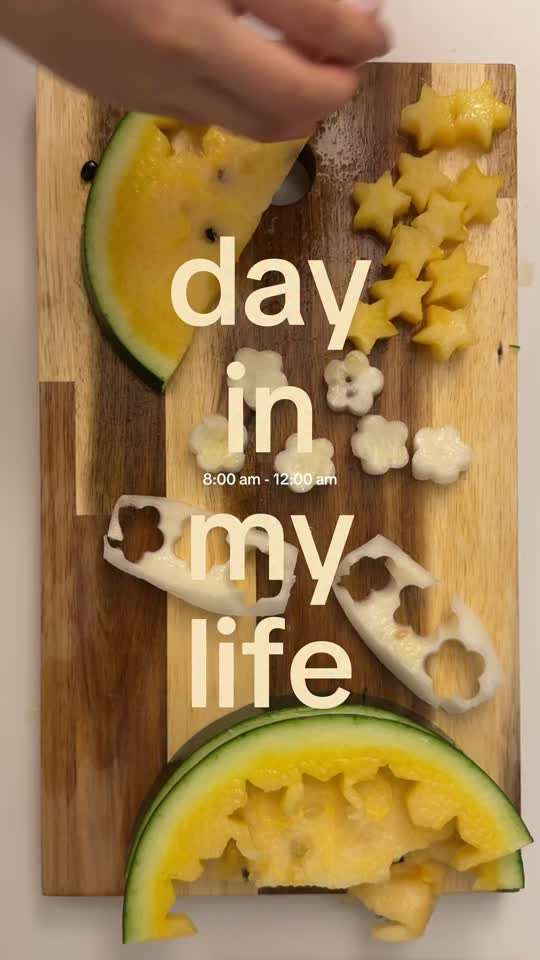
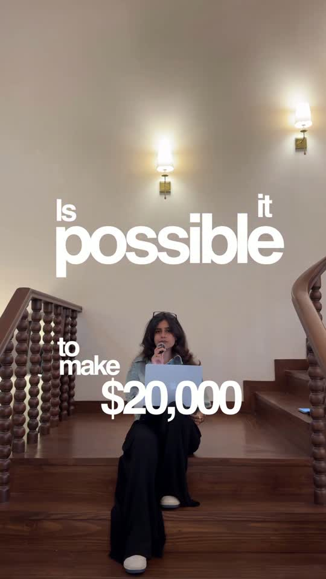

Five concepts that make ads feel native
The trick is to borrow the structure of content people already enjoy watching, then give your product a natural role in it. If the idea sounds worth watching before you even mention the product, you've got something to build on.
Day in the life

The trick with a day-in-the-life ad is to let the routine do some of the selling for you. When someone sees your product solving a problem during a day that looks like theirs, they can picture using it themselves. A bag's compartments suddenly mean something when you're packing for work, the gym and a night out in the same video.
Start with a day your customer recognises, then work out where your product would naturally come in. If you're selling a meal service, show someone coming home late from work and getting dinner together without much effort. Give us a little of the day around that moment, too, so the product feels like something this person actually uses.
Replying to a comment
Your comments section is already giving you ad ideas. Look for the questions people ask just before buying, because those are often the same questions the next viewer has in their head. If you don't have comments yet, you can make one up around a question your customer would ask. Someone watching with that same question has a reason to stick around for the answer.
Choose a question you can answer on camera. If someone asks whether a jacket fits over a thick jumper, put one on and show them. You get a hook, a demonstration and a reason to trust the answer from a single question. Keep the whole ad centred on it so someone watching can think, 'Okay, that would work for me.'
Street interactions
In this reel, she spots someone she fancies and asks him to go for tea. You're watching to see if he'll say yes and how their little date goes, so by the time they're ordering and trying drinks, the brand already belongs in the story. It feels like the kind of encounter you'd watch anyway, and you're curious enough about what happens next to stay for the product.
Build yours around a situation people would want to see play out, with your product giving them something to do together. You could invite someone to try a new café with you or have two strangers choose each other's order. Plan how you'll bring them together, then give them room to talk and react. We get to know the product while we're following what's happening between them.
Podcast clips
Give the viewer's questions to the other person in the conversation. One speaker brings up the product, and the other asks what it costs, how it works or why they'd use it. You can cover the things someone wants to know before buying through the questions they'd ask if they were sitting there too.
When you write yours, start with the exchange you'd actually stop to listen to, then let each question move the conversation along. If one person mentions the price, the other can ask what you'd usually pay for something similar. You can script this, including with AI speakers, using details you can actually back up. Write each follow-up around something the other person just said.
Challenges

A challenge gives your product a job to do and gives the viewer a result to wait for. Once you've set a goal with a time limit or budget, we're watching to see whether you'll pull it off. As you work through it, we get to see what the product can do and how much of a difference it makes.
Pick a challenge your customer would care about, like making five lunches on a fixed budget or refreshing a room in one afternoon. Explain the rules upfront, then spend your time on the moments where the product helps you make progress. Leave in the decisions and small setbacks that explain the result, and finish by showing what you actually achieved. If the goal was five lunches for $30, show all five and what you spent.